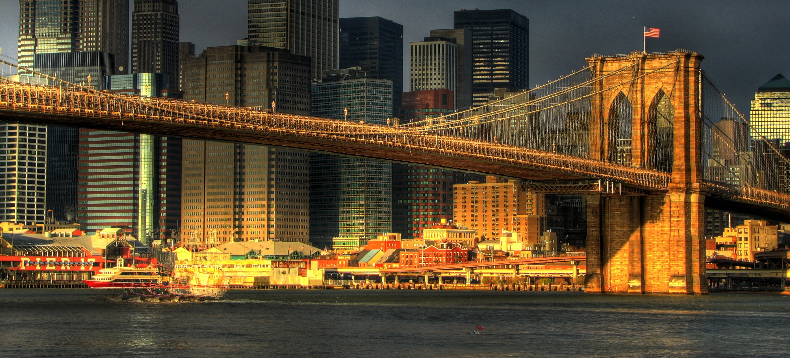

Cultural Symbolism
The Brooklyn Bridge has transcended its functional role to become a cultural icon and a symbol of unity and resilience. It has been featured in countless works of art, literature, and film, representing the aspirations and challenges of the city it spans. The bridge's enduring presence has made it a focal point of New York City's cultural identity.